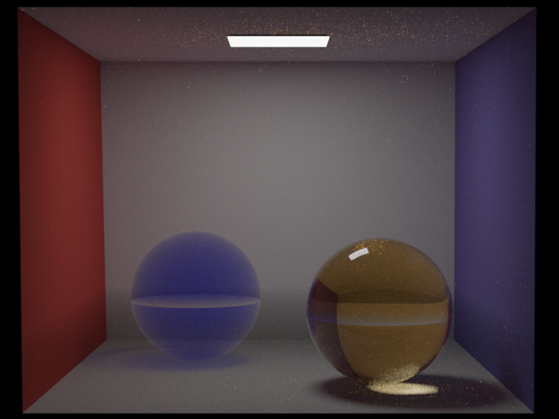
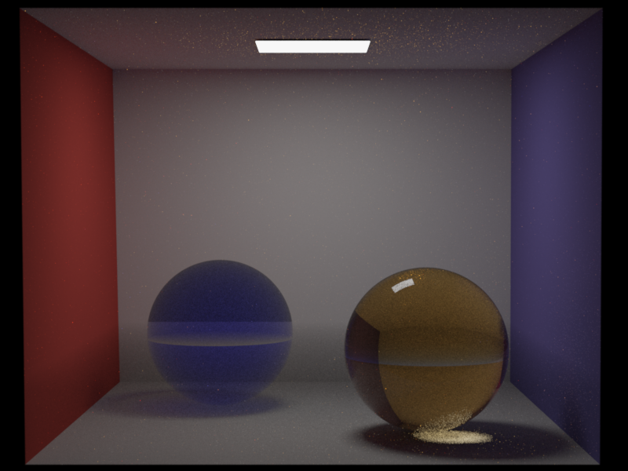

[Back to Index](index.html)
**Nori**
# Features -- Participating Media
## Phase Functions
The phase function $f_\text{p}(\mathbf{x}, \boldsymbol{\omega}_\text{i}, \boldsymbol{\omega})$ describes the angular distribution of light as it is scattered at a point within a medium. It is the volumetric analog of the BRDF for surfaces. Unlike a BRDF, which is normalized by a cosine factor and can integrate to values less than 1 (due to absorption), a phase function represents a pure probability density function (PDF) over the sphere of directions. Therefore, it must integrate to unity:
$$
\int_{S^2} f_\text{p}(\mathbf{x}, \boldsymbol{\omega}_\text{i}, \boldsymbol{\omega}) \mathrm{d} \boldsymbol{\omega}_\text{i} = 1
$$
### Description
The phase functions implemented are the isotropic phase function and the henyey-greenstein phase function.
In isotropic scattering, light is scattered equally in all directions. This is the volumetric equivalent of a perfectly diffuse Lambertian surface. Since there are $4\pi$ steradians in a unit sphere,
$$
f_\text{p}(\boldsymbol{\omega}_\text{i}, \boldsymbol{\omega}_\text{o}) = \frac{1}{4\pi}
$$
In many real-world media (like clouds or smoke), scattering is highly anisotropic, meaning it favors certain directions. Henyey-Greenstein is a popular empirical model used to simulate this behavior:
$$
f_{\text{p}, \text{HG}}(\theta) = \frac{1}{4\pi} \frac{1 - g^2}{(1 + g^2 - 2g \cos \theta)^{3/2}}
$$
where $\theta$ is the angle between the incoming and outgoing directions. The parameter $g$ (the asymmetry parameter or mean cosine) defines the "shape" of the scattering:
- $g > 0$: Forward scattering (light continues mostly in the same direction).
- $g < 0$: Backscattering (light is reflected back toward the source).
- $g = 0$: Isotropic scattering (mathematically equivalent to the isotropic model).
The value of $g$ is defined as the average cosine of the scattering angle:
$$
g = \int_{S^2} f_\text{p}(\mathbf{x}, \boldsymbol{\omega}_\text{i}, \boldsymbol{\omega}) \cos \theta \, \mathrm{d} \boldsymbol{\omega}_\text{i}
$$
where $\cos \theta = -\boldsymbol{\omega} \cdot \boldsymbol{\omega}_\text{i}$. For example, if $g=0.5$, the "average" photon is deflected only $60^\circ$ ($\cos 60^\circ = 0.5$) from its original path.
**Files created or modified**:
- `include/nori/phasefunction.h`
- `src/isotropic.cpp`
- `src/henyey_greenstein.cpp`
**Validation scenes**:
#### `include/nori/phasefunction.h`
This file mirrors the BSDF interface for consistency. It includes a `PhaseFunctionQueryRecord`, similar to the `BSDFQueryRecord`, and supports two constructors of a `PhaseFunctionQueryRecord` -- one that takes in the incident direction $\boldsymbol{\omega}_\text{i}$ for sampling the outgoing direction $\boldsymbol{\omega}_\text{o}$, and one that takes in both $\boldsymbol{\omega}_\text{i}$ and $\boldsymbol{\omega}_\text{o}$ for evaluation.
The `PhaseFunction` object is the superclass of all phase functions and has the methods `sample` and `eval`. Unlike `BSDF` which also has the `pdf` method, phase functions are PDFs themselves, hence `eval` will return the phase function value (i.e. the PDF). The `sample` method in `PhaseFunction` also returns the phase function value for convenience (instead of 1.0, which would be case in the `BSDF` implementation that returns `eval() / pdf()`).
#### `Isotropic::sample(...)`
Given a sample $\boldsymbol{\xi} \in [0, 1]^2$, we sample a direction uniformly on a sphere with `Warp::squareToUniformSphere` and assign this direction to `pRec.wo`. The method returns the phase function value is $1 / (4\pi)$.
#### `Isotropic::eval(...)`
The phase function value is simply $1 / (4\pi)$ for any given pairs of $\boldsymbol{\omega}_\text{i}$ and $\boldsymbol{\omega}_\text{o}$.
#### `HenyeyGreensteinPhaseFunction::sample(...)`
The azimuthal angle is simply $\phi = 2\pi \xi_2$ since Henyey-Greenstein does not depend on it. For the polar angle, we need to find $\cos\theta$ by inverting the CDF. The marginal PDF for $\cos\theta$ is obtained by integrating over $\phi$:
$$
p(\cos\theta) = \frac{1 - g^2}{2(1 + g^2 - 2g\cos\theta)^{3/2}}.
$$
The CDF is obtained by integrating from $-1$ to $\cos\theta$. Let $u = 1 + g^2 - 2g\mu$, so $\mathrm{d}u = -2g \, \mathrm{d}\mu$:
$$
\begin{align*}
P(\cos\theta) &= \int_{-1}^{\cos\theta} \frac{1 - g^2}{2(1 + g^2 - 2g\mu)^{3/2}} \, \mathrm{d}\mu \\
&= \frac{1 - g^2}{2} \int_{(1+g)^2}^{1 + g^2 - 2g\cos\theta} u^{-3/2} \cdot \frac{\mathrm{d}u}{-2g} \\
&= \frac{1 - g^2}{-4g} \left[ -2u^{-1/2} \right]_{(1+g)^2}^{1 + g^2 - 2g\cos\theta} \\
&= \frac{1 - g^2}{2g} \left( \frac{1}{\sqrt{1 + g^2 - 2g\cos\theta}} - \frac{1}{1+g} \right).
\end{align*}
$$
Setting $P(\cos\theta) = \xi_1$ and solving for $\cos\theta$:
$$
\begin{align*}
\xi_1 &= \frac{1 - g^2}{2g} \left( \frac{1}{\sqrt{1 + g^2 - 2g\cos\theta}} - \frac{1}{1+g} \right) \\
\frac{2g\xi_1}{1 - g^2} + \frac{1}{1+g} &= \frac{1}{\sqrt{1 + g^2 - 2g\cos\theta}} \\
\frac{2g\xi_1 + (1-g)}{1 - g^2} &= \frac{1}{\sqrt{1 + g^2 - 2g\cos\theta}} \\
\frac{1 - g + 2g\xi_1}{(1-g)(1+g)} &= \frac{1}{\sqrt{1 + g^2 - 2g\cos\theta}} \\
\sqrt{1 + g^2 - 2g\cos\theta} &= \frac{(1-g)(1+g)}{1 - g + 2g\xi_1} = \frac{1 - g^2}{1 + g - 2g(1 - \xi_1)}.
\end{align*}
$$
Squaring both sides and solving for $\cos\theta$:
$$
\cos\theta = \frac{1}{2g}\left(1 + g^2 - \left(\frac{1 - g^2}{1 + g - 2g\xi_1}\right)^2\right).
$$
For the special case $g \approx 0$ (isotropic), we use uniform sphere sampling: $\cos\theta = 1 - 2\xi_1$.
Once $\cos\theta$ and $\phi$ are computed, we build a coordinate frame around the forward scattering direction $-\boldsymbol{\omega}_\text{i}$ and convert from spherical to Cartesian coordinates to obtain $\boldsymbol{\omega}_\text{o}$.
#### `HenyeyGreensteinPhaseFunction::eval(...)`
The method simply computes $\cos \theta$ for the given pair of $\boldsymbol{\omega}_\text{i}$ and $\boldsymbol{\omega}_\text{o}$, and returns
$$
f_{\text{p}, \text{HG}}(\theta) = \frac{1}{4\pi} \frac{1 - g^2}{(1 + g^2 - 2g \cos \theta)^{3/2}}.
$$
### Validation
## Transmittance in Homogeneous Media
This feature enables coloured dielectric materials and fog volumes using Beer's law transmittance for homogeneous participating media.
### Description
By Beer's law, in a homogeneous participating medium (where the absorption coefficient $\boldsymbol{\sigma}_\text{a}$ is constant), the transmittance of light is given by
$$
T = \exp\{-\boldsymbol{\sigma}_\text{a} t\}
$$
where $t$ is the distance travelled.
**Files created or modified**:
- `include/nori/bsdf.h`
- `src/null.cpp`
- `src/dielectric.cpp`
- `src/path_mis.cpp`
**Validation scenes**:
- `scenes/nori-beyond/homogeneous_media/cbox_colored_glass.xml`
- `scenes/nori-beyond/homogeneous_media/cbox_colored_glass_mitsuba.xml`
#### `include/nori/bsdf.h`
The `BSDF` interface is extended to include absorption with default no-absorption behaviour. New virtual methods `getAbsorptionCoefficient()` (returns `Color3f(0.0f)` by default) and `hasAbsorption()` (returns `false` by default) are added. A method `isNull()` (returns `false` by default) is also added to distinguish null/transparent surfaces from real surfaces during ray marching.
#### `src/null.cpp`
This is a null/transparent BSDF that lets rays pass through without any scattering or reflection. It is used to bound fog volumes without any refractive distortion. It overrides `hasAbsorption` and `getAbsorptionCoefficient` to expose the volume's absorption coefficient, and `isNull` to return `true`. The null BSDF has discrete measure and returns zero for `eval` and `pdf`. In the `sample` method, it sets $\boldsymbol{\omega}_\text{o}$ to $-\boldsymbol{\omega}_\text{i}$ (ray passes straight through) and $\eta$ to 1 (no index of refraction change). It can be used in the scene like this:
```
```
#### `src/dielectric.cpp`
The dielectric BSDF is extended with a new `Color3f` member variable `m_sigmaA`, which stores the absorption coefficient $\boldsymbol{\sigma}_\text{a}$ per RGB channel. The methods `getAbsorptionCoefficient` and `hasAbsorption` are overridden. The absorption itself is not applied by the BSDF; it is handled by the integrator via Beer's law on each ray segment inside the medium.
#### `PathMISIntegrator::Li(...)`
The integrator uses a medium stack (`std::vector``<``const BSDF *>`) to track which absorbing volumes the ray is currently inside. This stack-based approach correctly handles arbitrarily nested media (e.g. a coloured glass sphere inside a fog cube). The innermost medium on the stack determines the active absorption coefficient.
The core procedure is null-surface marching: given a ray, we step through all null (transparent) boundaries until we reach a real surface, applying Beer's law and updating the medium stack at each step. This procedure is used in three contexts:
1. Initial ray marching (camera ray to first real surface)
2. Shadow rays (emitter sampling, using a separate copy of the medium stack)
3. BSDF-sampled rays (path continuation after bouncing off a real surface)
The null-surface marching procedure works as follows:
1. Trace the ray to the nearest surface intersection.
2. Look up the current absorption coefficient $\boldsymbol{\sigma}_\text{a}$ from the top of the medium stack (zero if the stack is empty).
3. Apply Beer's law: multiply the throughput by $T = \exp\{-\boldsymbol{\sigma}_\text{a} \cdot t\}$, where $t$ is the distance to the intersection.
4. If the intersected surface is not null (i.e. it is a real surface like a diffuse wall or dielectric), stop marching and return this intersection.
5. Otherwise, the surface is null (a medium boundary). Update the medium stack:
- If the ray is entering the volume (ray direction dot geometric normal $< 0$), push the null surface's BSDF onto the stack.
- If the ray is exiting the volume (ray direction dot geometric normal $> 0$), find and remove this BSDF from the stack.
6. Advance the ray origin to the intersection point and go back to step 1.
For shadow rays, the procedure is identical except that it uses a separate copy of the medium stack (so it does not disturb the main path state), accumulates transmittance into a separate variable, and terminates early if a non-null surface is hit (the light is occluded).
For dielectric surfaces, the medium stack is updated when the BSDF samples a transmission (refraction) event. This is detected by checking whether $\boldsymbol{\omega}_\text{i}$ and $\boldsymbol{\omega}_\text{o}$ are on opposite sides of the geometric normal. If so, the ray has crossed the interface and the dielectric's absorption medium is pushed onto or removed from the stack.
The medium stack uses id-based removal: when exiting a volume, the stack is searched from the back (innermost) to find and remove the matching BSDF pointer. This is necessary because overlapping volumes do not always nest cleanly. In the validation scene below, the sphere straddles the fog cube boundary (it pokes above the fog). Consider a ray traveling downward through the top of the sphere into the fog:
1. Ray enters the sphere (above the fog) $\to$ stack: `[sphere]`
2. Ray enters the fog cube (partway through the sphere) $\to$ stack: `[sphere, fog]`
3. Ray exits the sphere (still inside the fog) $\to$ need to remove `sphere`, but `fog` is on top
At step 3, a naive stack pop would remove `fog` instead of `sphere`, which is wrong. Searching from the back by BSDF identity correctly finds and removes `sphere` from below `fog`, leaving the stack as `[fog]`.
### Validation
The validation scene places a blue glass sphere (null BSDF, $\boldsymbol{\sigma}_\text{a} = (3.0, 3.0, 0.1)$) and an amber glass sphere (dielectric BSDF, $\boldsymbol{\sigma}_\text{a} = (0.5, 1.5, 4.0)$) inside a fog cube (null BSDF, $\boldsymbol{\sigma}_\text{a} = (0.5, 0.5, 0.5)$) in a Cornell box. The fog cube extends through the bottom part of the room, while the spheres poke above the fog, so the fog boundary crosses each sphere near its equator.


The Nori and Mitsuba renders differ due to a fundamental difference in how the two renderers track media. Mitsuba 3 uses a single medium pointer per ray: at each surface crossing, the active medium is replaced with the surface's interior or exterior medium. This produces two visible artifacts in the Mitsuba renders:
1. **A visible horizontal plane across the spheres** at the fog cube boundary. This appears as a brightness discontinuity where the fog cube's top face intersects the spheres. Because Mitsuba's medium pointer switches discretely at the null boundary, there is an abrupt transition between "fog active" (below the plane) and "no fog" (above the plane). In Nori, the stack-based approach produces a smooth transition because entering/exiting the fog and sphere are tracked independently.
2. **A bright ring at the sphere-fog boundary** in the original Mitsuba render (center image). When a ray exits the sphere (still geometrically inside the fog cube), Mitsuba sets the medium to the sphere's exterior medium. If no exterior medium is specified on the sphere, Mitsuba treats the region as vacuum, losing the fog absorption for the remainder of the segment. Rays grazing the sphere edge barely enter the sphere (little sphere absorption) and also miss the fog behind it (medium reset to vacuum on exit), producing the bright ring.
Nori uses a stack-based approach: entering a volume pushes its BSDF onto the stack, and exiting pops it. When a ray exits the sphere, the fog is still on the stack, so fog absorption continues to be applied correctly. This produces a smoother, physically correct result without the horizontal plane artifact or the bright ring (left image).
To verify this, I re-rendered the Mitsuba scene with `` added to both spheres, which tells Mitsuba to restore the fog medium on sphere exit (right image). This largely eliminates the bright ring artifact and brings Mitsuba closer to Nori's output. However, Mitsuba's single-pointer approach still cannot fully represent the overlapping geometry: the sphere's exterior medium is set to fog everywhere, including the upper hemisphere that is above the fog cube. This means Mitsuba now over-attenuates above the fog boundary while correctly attenuating below it. Nori's stack naturally handles this because it tracks all volume boundaries the ray has crossed, regardless of the order.